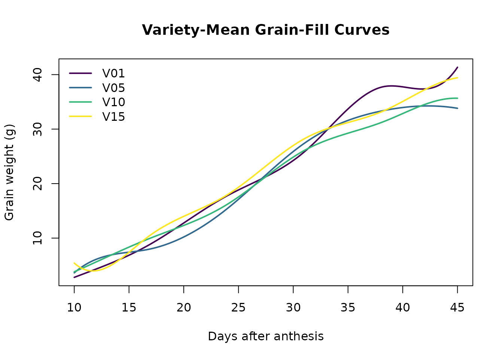
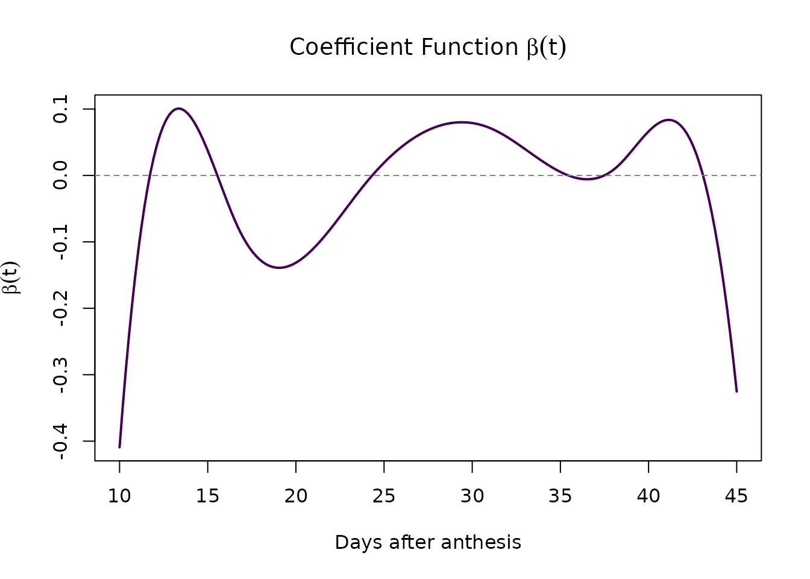

Background
In crop variety trials, grain weight is measured over time during the grain-filling period. The rate and pattern of grain fill may influence final yield. Traditional approaches fit parametric curves (logistic, Gompertz) to each plot and extract parameters (rate, maximum). FDA provides a more flexible alternative: represent each variety’s grain-fill trajectory as a smooth curve and relate the entire curve to yield.
Data
We use the simulated sim_grain_fill dataset: 20
varieties, 3 blocks, 8 time points (10–45 days after anthesis).
library(funcrop)
library(data.table)
data(sim_grain_fill)
dt <- copy(sim_grain_fill)
dt[, variety := factor(variety)]
dt[, block := factor(block)]
dt[, plot_id := factor(plot_id)]
# Add plot-level yield noise (original yield is per-variety)
set.seed(42)
pids <- unique(dt$plot_id)
dt <- merge(dt,
data.table(plot_id = pids,
yield_noise = rnorm(length(pids), 0, 0.8)),
by = "plot_id", sort = FALSE)
dt[, yield_plot := yield + yield_noise]Step 1: B-Spline Basis
times <- sort(unique(dt$time))
basis <- bspline_basis(times, n_knots = 4, degree = 3, penalty_order = 2)
cat("Basis functions:", basis$n_basis, "\n")
#> Basis functions: 8
# Evaluate at observation times
B_obs <- bspline_basis(dt$time, n_knots = 4, degree = 3,
boundary = basis$boundary)$BStep 2: Per-Plot OLS Curves
Fit each plot’s grain-fill trajectory by OLS (no mixed model yet):
plots <- unique(as.character(dt$plot_id))
alpha_hat <- matrix(NA, nrow = length(plots), ncol = ncol(B_obs))
rownames(alpha_hat) <- plots
for (p in seq_along(plots)) {
idx <- which(as.character(dt$plot_id) == plots[p])
y_p <- dt$grain_weight[idx]
B_p <- B_obs[idx, ]
alpha_hat[p, ] <- solve(crossprod(B_p), crossprod(B_p, y_p))
}
cat("Fitted", length(plots), "plot-level curves\n")
#> Fitted 60 plot-level curves
cat("Coefficient matrix:", nrow(alpha_hat), "x", ncol(alpha_hat), "\n")
#> Coefficient matrix: 60 x 8Step 3: Variety-Mean Curves
Average the per-plot coefficients within each variety:
pvm <- unique(data.table(plot_id = as.character(dt$plot_id),
variety = as.character(dt$variety)))
var_levels <- sort(unique(as.character(dt$variety)))
n_var <- length(var_levels)
n_basis <- ncol(B_obs)
alpha_variety <- matrix(NA, nrow = n_var, ncol = n_basis)
rownames(alpha_variety) <- var_levels
for (v in var_levels) {
v_plots <- pvm[variety == v, plot_id]
alpha_variety[v, ] <- colMeans(alpha_hat[v_plots, , drop = FALSE])
}
# Reconstruct curves on a fine grid
t_fine <- seq(min(times), max(times), length.out = 200)
B_fine <- bspline_basis(t_fine, n_knots = 4, degree = 3,
boundary = basis$boundary)$B
curves <- B_fine %*% t(alpha_variety)
show_vars <- var_levels[c(1, 5, 10, 15)]
cols <- c("#440154", "#31688e", "#35b779", "#fde725")
plot(range(t_fine), range(curves[, show_vars]), type = "n",
xlab = "Days after anthesis", ylab = "Grain weight (g)",
main = "Variety-Mean Grain-Fill Curves")
for (i in seq_along(show_vars)) {
lines(t_fine, curves[, show_vars[i]], col = cols[i], lwd = 2)
}
legend("topleft", legend = show_vars, col = cols, lwd = 2, bty = "n")
Variety-mean grain-fill curves (4 selected varieties).
Step 4: Scalar-on-Function – yield ~ grain-fill curve
Compute the functional covariate matrix and regress yield on it:
# Inner product matrix J
t_quad <- seq(min(times), max(times), length.out = 500)
B_quad <- bspline_basis(t_quad, n_knots = 4, degree = 3,
boundary = basis$boundary)$B
J <- crossprod(B_quad) * diff(t_quad[1:2])
# Functional covariate: C = Alpha %*% J
C_mat <- alpha_variety %*% as.matrix(J)
# Yield data
yield_dt <- dt[, .(yield = mean(yield_plot)), keyby = variety]
# Simple OLS regression: yield ~ C
reg_dt <- data.frame(
yield = yield_dt$yield[match(var_levels, yield_dt$variety)]
)
for (k in seq_len(n_basis)) {
reg_dt[[paste0("C", k)]] <- C_mat[, k]
}
fit_ols <- lm(as.formula(paste("yield ~",
paste0("C", 1:n_basis, collapse = " + "))),
data = reg_dt)
cat("R-squared:", round(summary(fit_ols)$r.squared, 3), "\n")
#> R-squared: 0.655
cat("RMSE:", round(sqrt(mean(fit_ols$residuals^2)), 3), "\n")
#> RMSE: 1.111Step 5: The beta(t) Coefficient Function
The regression coefficients b define the importance
function beta(t) = sum_k b_k * B_k(t):
b_hat <- coef(fit_ols)[paste0("C", 1:n_basis)]
beta_t <- as.numeric(B_fine %*% b_hat)
plot(t_fine, beta_t, type = "l", lwd = 2, col = "#440154",
xlab = "Days after anthesis", ylab = expression(beta(t)),
main = expression("Coefficient Function " * beta(t)))
abline(h = 0, lty = 2, col = "grey50")
Coefficient function beta(t): how each phase of grain-fill influences yield.
Interpretation: Where beta(t) is large and positive, grain-fill at that time contributes positively to yield. Where beta(t) is near zero, that phase is unimportant. This identifies the critical growth window for breeders.
Step 6: Penalised beta(t) via Mixed Model
Decompose the regression into fixed (polynomial) and random (wiggly) parts:
mm <- make_Zspline(basis, constraint = "decompose")
# Null-space and range-space functional covariates
C_null <- C_mat %*% mm$X
C_range <- C_mat %*% mm$Z
reg_pen <- data.frame(yield = reg_dt$yield)
for (k in seq_len(ncol(C_null))) {
reg_pen[[paste0("Cnull", k)]] <- C_null[, k]
}
for (k in seq_len(ncol(C_range))) {
reg_pen[[paste0("Crange", k)]] <- C_range[, k]
}
cat("Fixed (null-space) covariates:", ncol(C_null), "\n")
#> Fixed (null-space) covariates: 2
cat("Random (range-space) covariates:", ncol(C_range), "\n")
#> Random (range-space) covariates: 6
cat("Total observations:", nrow(reg_pen), "\n")
#> Total observations: 20
cat("\nNote: With only 20 varieties and", ncol(C_null) + ncol(C_range),
"covariates,\nthe penalised model requires a mixed model backend",
"(ASReml or bayesreml)\nto estimate the smoothing parameter. See the",
"'ASReml vs bayesreml' vignette.\n")
#>
#> Note: With only 20 varieties and 8 covariates,
#> the penalised model requires a mixed model backend (ASReml or bayesreml)
#> to estimate the smoothing parameter. See the 'ASReml vs bayesreml' vignette.Summary
This vignette demonstrated the funcrop FDA workflow:
- B-spline basis construction with penalty
- Per-plot OLS curve fitting
- Variety-mean functional profiles
- Scalar-on-function regression: yield ~ integral(beta(t) * f(t)) dt
- beta(t) coefficient function revealing which growth phases matter
- Penalised estimation via mixed model reparameterisation
The key advantage over parametric (logistic/Gompertz) approaches: no assumption about curve shape, and beta(t) reveals the full time-varying relationship between grain-fill and yield.